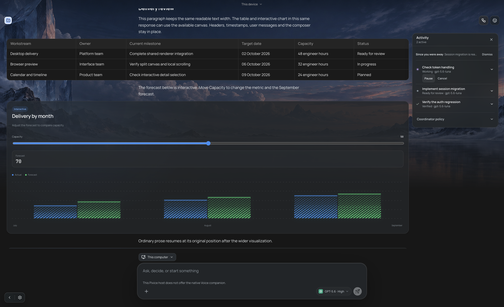
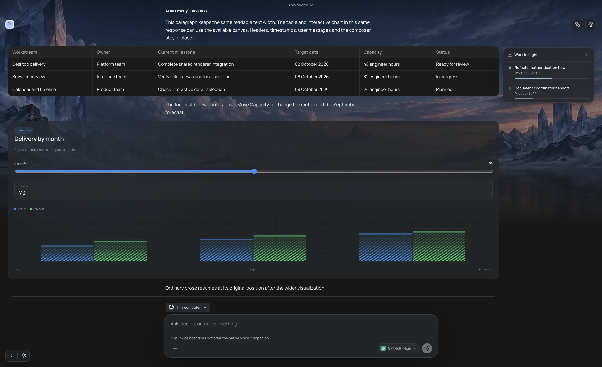
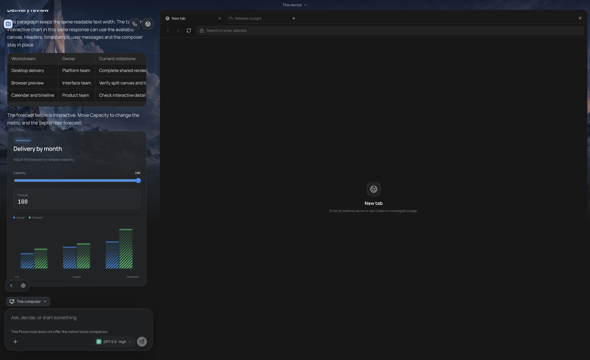
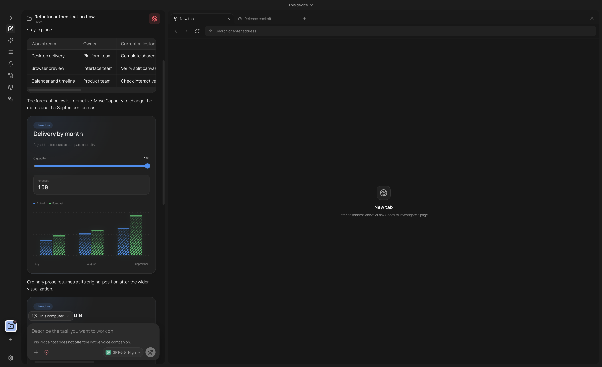
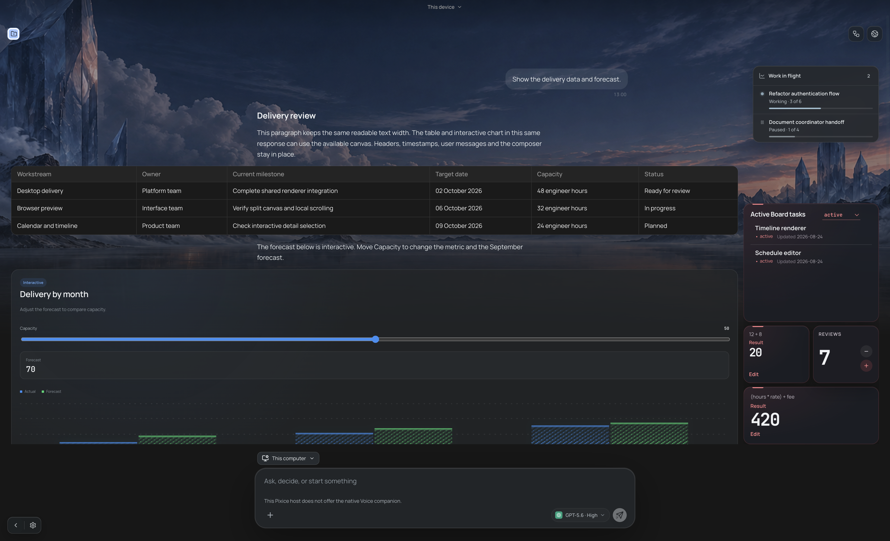
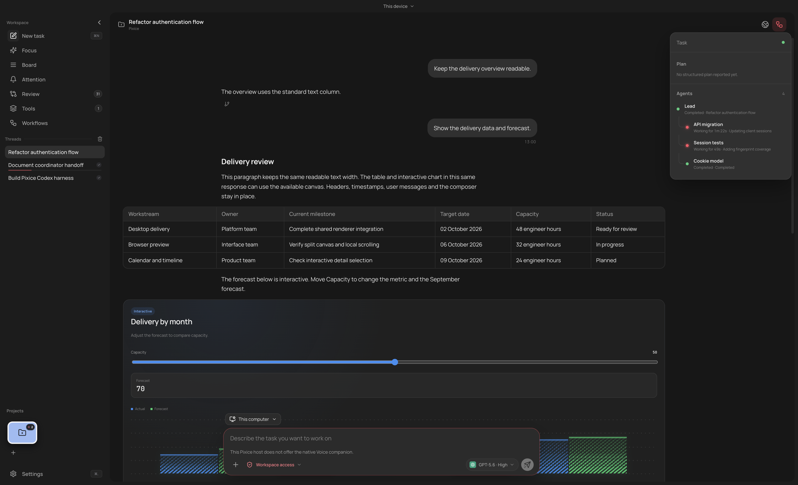
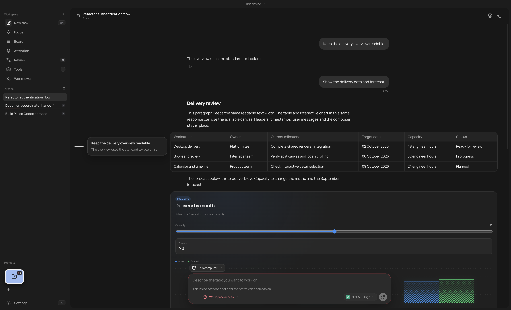
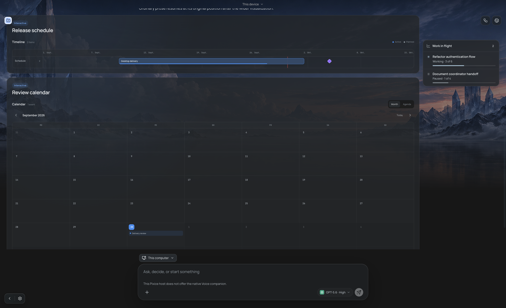
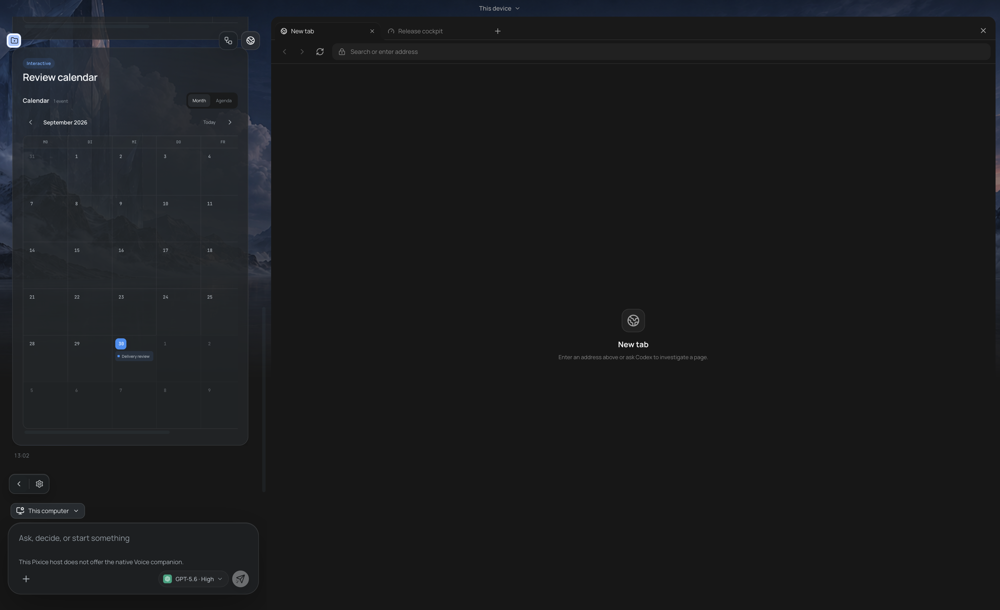

Tables and visualizations use the available canvas
Actual App captures with one assistant message containing prose, a table, an interactive chart, a timeline and a calendar. Prose, headers, user bubbles and composer keep their horizontal position and width.
| Case | Prose | Rich before | Rich after | Horizontal page overflow |
|---|
| Focus desktop | 615px | 615px | 1468px | 0px |
| Task desktop | 615px | 615px | 1453px | 0px |
| Focus Preview | 425px | 425px | 425px | 0px |
| Task Preview | 385px | 385px | 385px | 0px |
Open live Focus fixture · Open live task fixture · Full handoff · Measurements · Rail and narrow checks
Activity panel clearance, follow-up r38
Opening Activity reduces rich width from 1468px to 1436px and leaves 12px clearance. Closing restores 1468px. Prose and composer position and width stay unchanged. Zero page/canvas horizontal overflow; both rich edges are visible. Mutation updates also pass with transitions disabled. Targeted measurements
Activity closedActivity open
Focus, same message before and after
Full chart, table and surrounding prose
Preview splits use local table scrolling
Focus Preview
Task Preview
Visible rails retain their space
Focus task rail and widget shelf
Task inspector
Expanded prompt tooltip
Timeline and calendar
Wide timeline
Calendar in Preview, local scrolling
Six existing renderer tests passed. Keyboard chart input and local table scrolling passed. Timeline and calendar detail selection passed. At 390px, both chat modes have zero page and canvas horizontal overflow with task navigation collapsed. The handoff records the expanded desktop navigation limit at that window size.